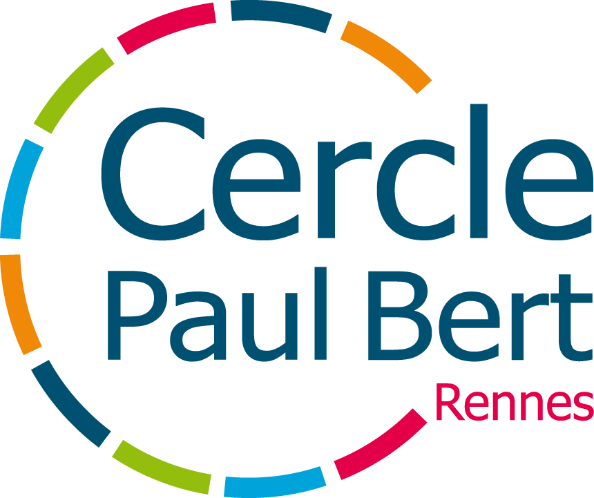
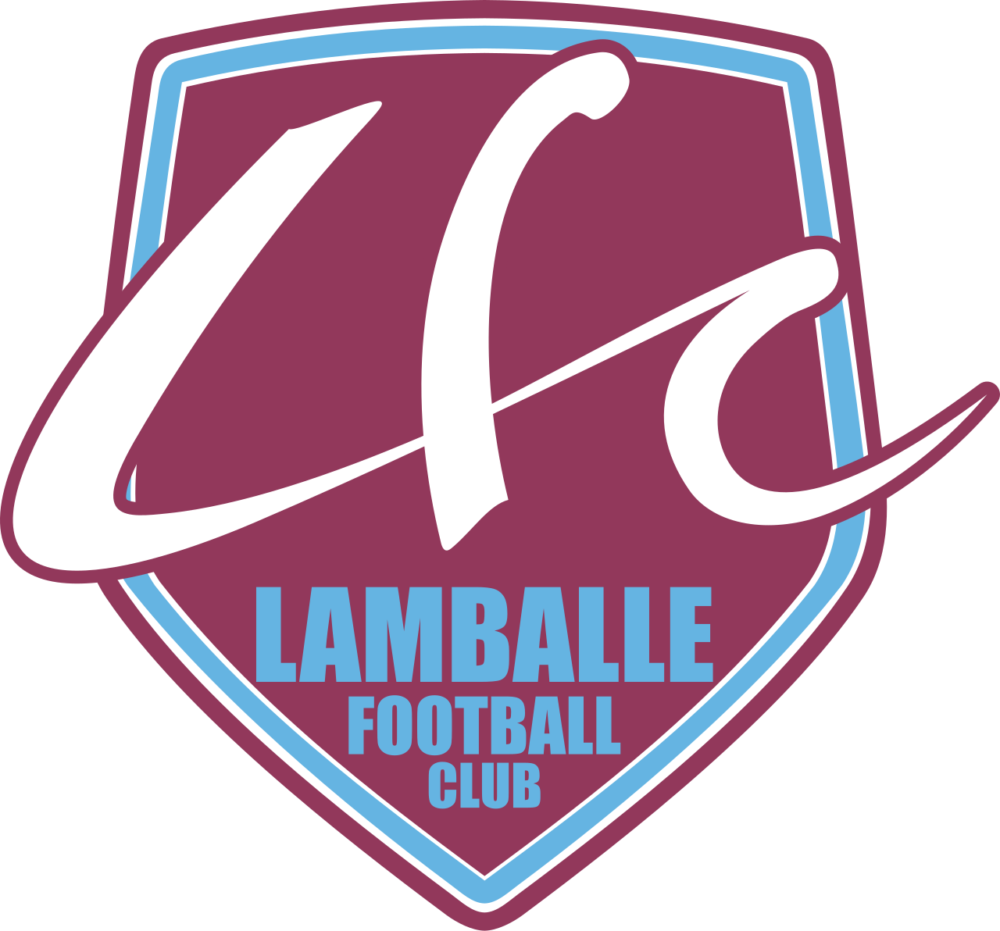
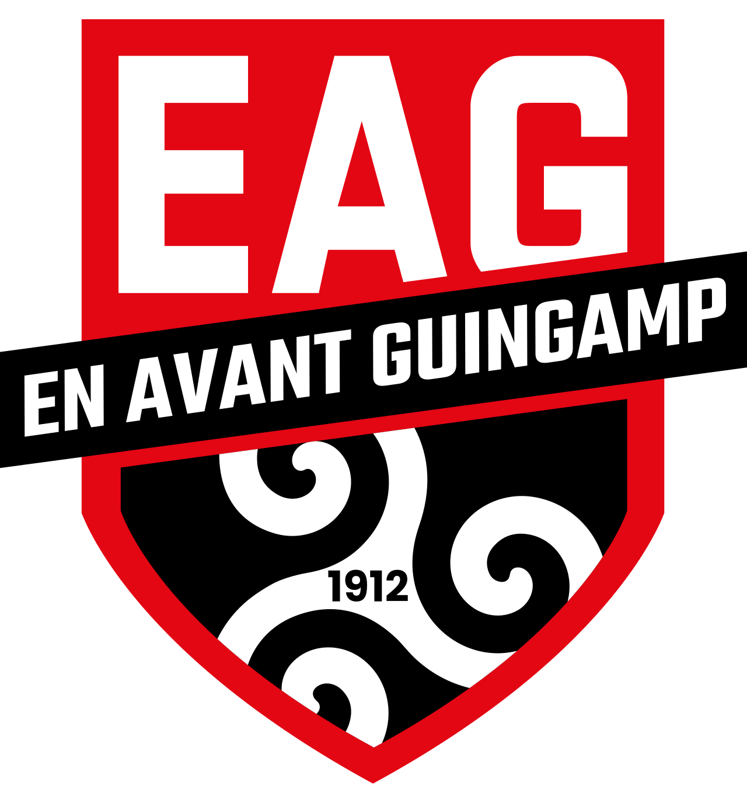
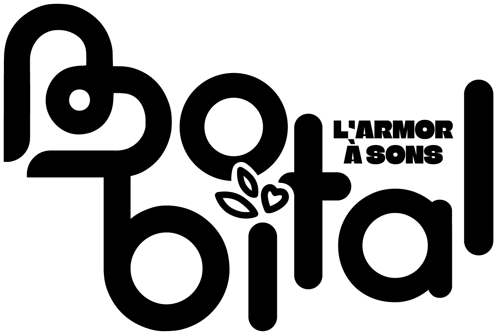
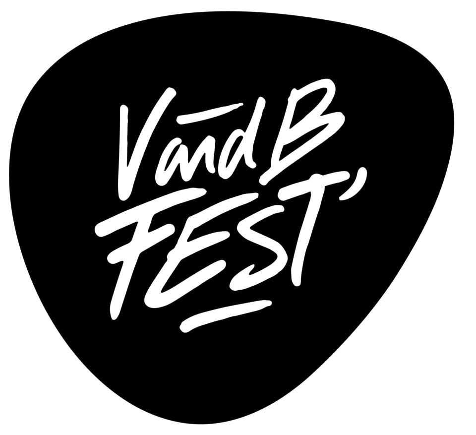

Mathys Roland · Photographe, vidéaste & graphiste freelance à Paris
Le monde selon RAWLAND.
Vidéo, photo et graphisme, je raconte des histoires et crée les souvenirs.
Découvrir mes projetsVidéos.
Le mouvement au service des histoires et le rythme au cœur des émotions.
Photos.
Une immersion visuelle dans le quotidien ainsi que l'exceptionnel.
Graphisme.
Une architecture graphique entre l'évidence du message et l'élégance de la forme.
À propos.
Je m'appelle Mathys Roland, créateur de contenu visuel freelance basé à Paris. Photographe, vidéaste et graphiste, je travaille entre vidéo, photographie et graphisme, avec une attention particulière portée au rythme, à la lumière et à la narration visuelle.
Mon travail couvre aussi bien des projets pour des marques et institutions (comme SNCF Intercités) que des projets personnels et sportifs, notamment en photographie de football professionnel sous le nom RAWLAND.
En freelance, j'accompagne clubs, festivals, marques et institutions à Paris et partout en France : photo de sport et d'événements, tournage et montage vidéo, motion design, affiches et identité visuelle.
-
Freelance - RAWLAND
2025 - aujourd'hui
Photo, vidéo et graphisme pour clients divers
-
SNCF Intercités - 75012
2025 - 2026
Alternance Chargé de Projets Audiovisuels. Gestion de projet, photographie, cadrage, montage de contenus audiovisuels au sein du service communication interne. Interviews, atermovies, film sécurité, mini-fiction...
-

Cercle Paul Bert (siège) - 35000 2024 - 2025Alternance Graphiste & vidéaste. Couverture d'événements sportifs et socio-sportifs, montage vidéo, Motion Design, création de supports de communication. Visuels réseaux sociaux, affiches, flyers, kakémono...
-

Lamballe Football Club - 22400 2023 - 2024Stage + Alternance Communication Digitale. Gestion et animation des réseaux sociaux, création de contenus (photographie, vidéos, affiches, visuels...). Mise à jour du site web, campagne e-mailing.
Ils m'ont
fait confiance.



Contact.
Un projet vidéo, photo ou graphisme en tête ? Écrivez-moi pour une prestation freelance !
- Mail. mathysroland.pro@gmail.com
- LinkedIn. @rolandmathys
- Instagram. @_rawland